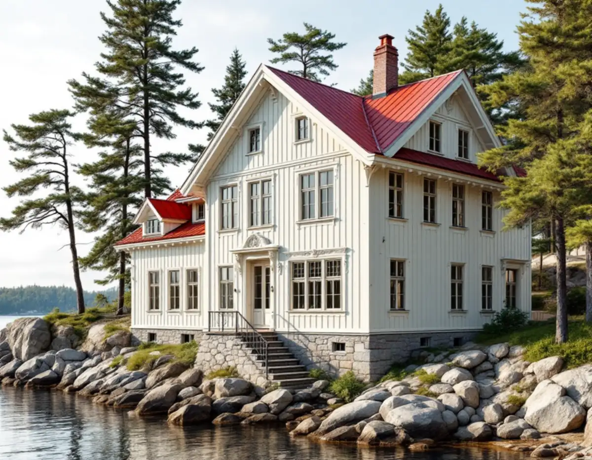
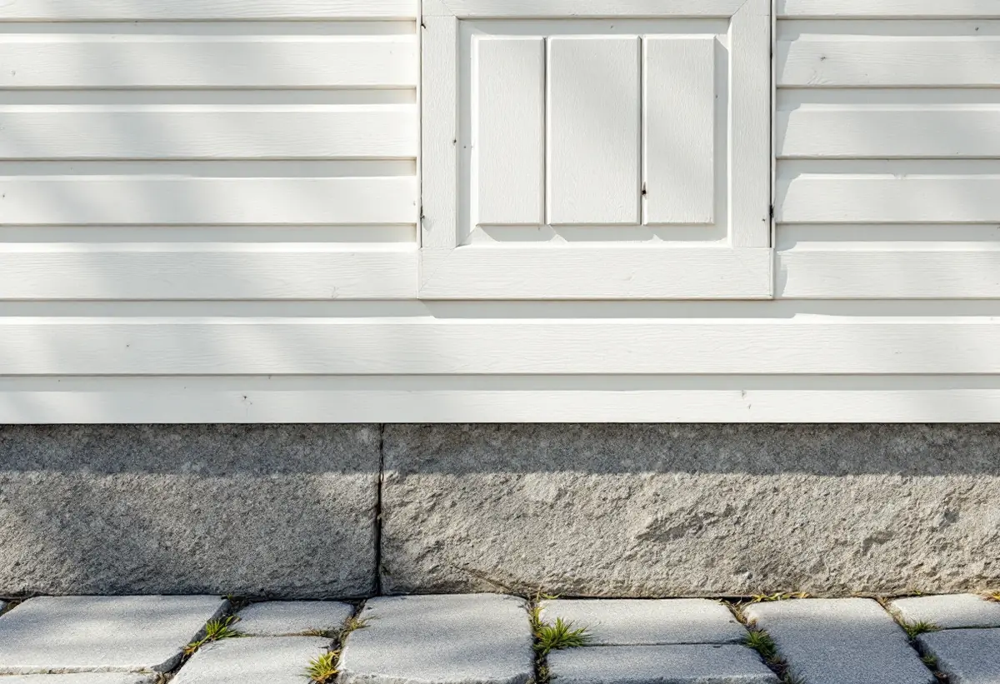

Inventering
Vi går igenom sockel, panel, fönster och taksprång och öppnar på ställen där vi misstänker fukt.
Vid farleden i Boo står sommarvillor från 1800-talets slut med ljus panel, höga stensocklar och långa taksprång, och i skogen bakom dem stugor som numera bebos året runt. Geal Entreprenad AB renoverar fasader i hela Nacka – lagar eller byter panel, putsar om och tilläggsisolerar – och börjar med ett gratis platsbesök och ett skriftligt kostnadsförslag.

Kommunens kulturmiljöprogram för sommarnöjena vid farleden återkommer till samma förhållningssätt område för område: befintliga hus ska respekteras i proportioner, fasadfärg och tak och i detaljer som fönster, panel, utsmyckningar, entréer och räcken. Ljusmålad panel dominerar på de äldre sommarvillorna, och programmet pekar ut rejäla stensocklar, resliga fönster och utskjutande taksprång som bevarandevärda karaktärsdrag.
Variationen är ändå stor. Sjövillan vid Fredriksro på Knarrnäs, en cottagevilla från 1870-talets slut, har en tegelsockel som programmet beskriver som lite speciell. Grävlingsbergsvillorna från 1890-talets slut har inslag av puts, och för Grävlingsberg–Dalen finns skydds- och varsamhetsbestämmelser i detaljplanen. Tegelön ligger dessutom inom riksintresset för kulturmiljövården Stockholms farled.
För en fasadrenovering är det sockeln, panelen och fönstren som bär husets uttryck. En lagning ska därför följa det som finns: samma panelprofil, samma typ av sockel och fönster som sitter kvar där de satt.

En hög stensockel håller trästommen borta från markfukten, men övergången mellan sten och panel är en av fasadens känsligaste punkter. Där samlas vatten som rinner längs väggen, och regnstänk från marken når de nedersta brädorna. Boverket påpekar att fuktskador kan uppstå när fasadens ytskikt fuktas upp och inte hinner torka ut tillräckligt fort.
Vi börjar därför nedifrån. Vi kontrollerar att sockelns överkant leder bort vatten, att det finns ett avstånd mellan sockel och panel och att de nedersta brädorna går att byta utan att resten av väggen rubbas. Lösa fogar i en murad sockel lagas med ett bruk som passar stenen, och skadade partier i en tegelsockel byts sten för sten.
Där panelen möter fönstren gäller samma sak. Fönsterbleck och droppkanter ska leda vattnet ut från väggen, och på resliga fönster med smala foder blir en ny bleckprofil lätt för grov. Ska fönstren renoveras samtidigt finns mer under fönsterbyte.
Programmet beskriver också de enklare stugorna, till exempel uthyrningsstugorna vid Visborgs minne. Där ska fasadmaterial och konstruktion vara av enkelt slag, nuvarande materialtyper användas vid underhåll och fönstren sitta i liv med ytterväggen. På stugorna förekommer stående panel och på de äldre oftast locklistpanel, med foder och vindskivor i nätta dimensioner.
Många stugor i Boo används i dag året runt, och då väcks frågan om väggarna ska isoleras. Boverket skriver att utvändig tilläggsisolering ofta är bäst för energin och fukten, men att fönster och dörrar då hamnar längre in och takfoten skjuter ut mindre. På ett hus med tunna väggar, fönster i liv och små takutsprång syns det tydligt. Resultatet blir oftast bättre om isoleringen görs när panelen ändå ska bytas, så att fönster, foder och takfot kan anpassas i samma arbete.
Invändig isolering lämnar fasaden orörd men gör väggens utsida kallare och ökar risken för fuktskador. Det kan behövas ett ångtätande skikt, och Boverket råder den som är osäker att ta hjälp av en fuktexpert.
Nacka kommun räknar upp byte av färg eller material på fasad, nya fönster och tilläggsisolering som exempel på fasadändringar. Inom detaljplan krävs inte längre bygglov för dem på en- eller tvåbostadshus, men åtgärden får inte strida mot planen, och ett ingrepp i den bärande konstruktionen kräver en anmälan.
Ligger fastigheten i ett område som enligt 8 kap. 13 § PBL är särskilt värdefullt utökas lovplikten. Då krävs bygglov för alla fasadändringar som påverkar områdets karaktär eller byggnadens yttre karaktärsdrag. I kommunens webbkarta visar lila markering byggnader och områden med särskilt höga kulturvärden. Orange betyder att en bedömning kan pågå, och då är rådet att kontakta stadsbyggnadsservice.
Att byta en ljusmålad panel mot puts, eller att isolera så att taksprånget krymper, är just den sortens ändring som prövas i de lila områdena. Ett byte mot samma material och utförande räknas enligt Boverket som underhåll. Vid bedömningen av vad som är en byggnads karaktärsdrag nämner Boverket bland annat form, färgsättning, storlek, utvändiga material, ålder och proportioner – och på en sommarvilla vid farleden hänger alla ihop med fasaden.
Vi går igenom sockel, panel, fönster och taksprång och öppnar på ställen där vi misstänker fukt.
Kulturmiljökartan och planbestämmelserna stäms av, så att du vet om ändringen kräver lov.
Du får ett skriftligt kostnadsförslag där sockellagning, panelbyte och eventuell isolering står var för sig.
På branta tomter planeras ställningen efter berg och murar, och terrasseringar skyddas.
Sockeln lagas, skadad panel byts mot samma profil och fönsterbleck anpassas till fodren.
Fasaden målas och vi går igenom arbetet tillsammans innan ställningen tas ner.
För ett småhus godkänner Skatteverket rotavdrag för att byta och reparera fasader, mura och reparera fasader, tilläggsisolera och måla fasader. Det är bara arbetskostnaden som ger avdrag: 30 procent av den, med högst 50 000 kr per person och år och 75 000 kr som tak för rot och rut sammanlagt.
Bortforsling av gammalt material ger inget avdrag. Geal gör avdraget direkt på fakturan.
Sockelns skick, hur många panelbrädor som behöver bytas, om fönsterfoder och bleck ska tillverkas efter förlaga och om väggarna ska isoleras. Branta tomter och hus nära vattnet kan kräva mer ställning och skydd. Efter ett kostnadsfritt platsbesök får du ett skriftligt kostnadsförslag.
Puts, panel och tilläggsisolering.
Fasadrenovering i Stockholm →Takbyte, takbesiktning och plåtarbeten.
Takläggare i Nacka →Saltsjöbaden, Boo och Älta.
Takrenovering i Nacka →Fasad- och fönstermålning.
Målare i Nacka →Verandor, panel och foder.
Snickare i Nacka →Nya golv och slipning.
Golvläggare i Nacka →VA, LTA och dagvatten på tomten.
Byggföretag i Nacka →Uthus, räcken och plåt kring villan.
Fasadmålning i Nacka →Villasamhällena vid Saltsjöbanan.
Fönsterbyte i Nacka →Linoljefärg, väder och verkstad för villafönster.
Fönsterrenovering i Nacka →Slipa och olja trägolvet.
Golvslipning i Nacka →Farledens plåttak och Saltsjöbadens villor.
Plåtslagare i Nacka →Strandskydd och villasamhällen.
Tillbyggnad i Nacka →